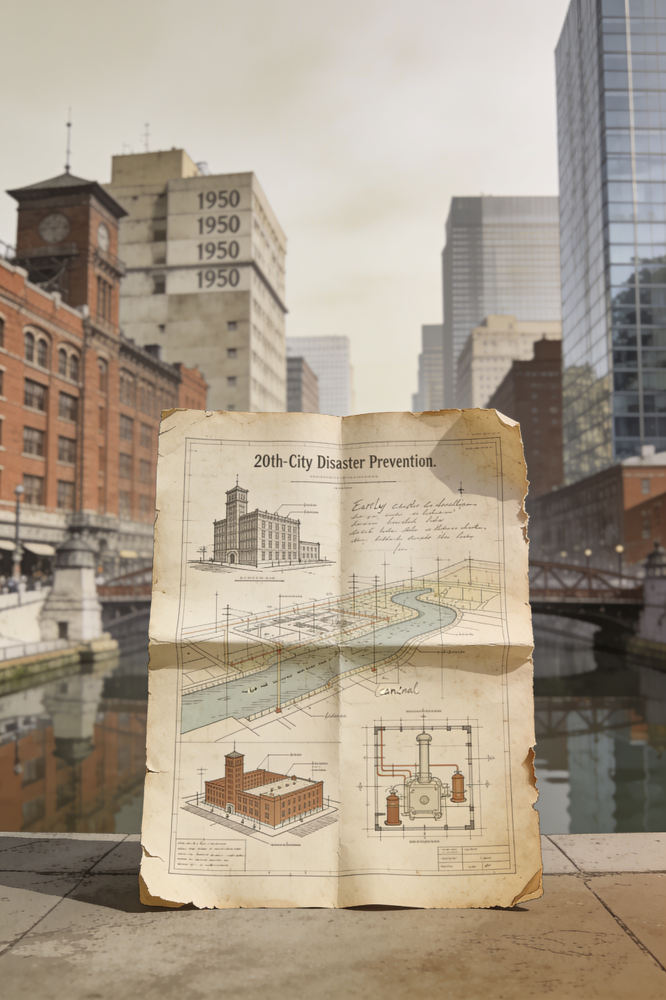

预警之后：全球城市防灾技术史
张青青内容简介
核心问题：技术如何改变城市面对灾害的方式？核心论点：防灾技术不仅是工具，更是风险认知与社会信任的载体。范围：19世纪末至今全球主要城市。矛盾：技术乐观主义与社会接受度、标准化与地方适应性。重点：关键技术突破及其在城市落地时的争议与调适。
目录
共 25 章第 01 章19世纪最后三十年第 02 章管道与病菌：卫生工程重塑的城市身体第 03 章钢铁骨架：建筑规范中的安全博弈第 04 章风暴之眼：预警网络与时间争夺战第 05 章当单一技术各自为战第 06 章震动中的方程：地震工程学的诞生第 07 章震动转化为规范第 08 章数字之眼：气象雷达与可计算的风暴第 09 章火的科学：燃烧建模与城市火险重定义第 10 章灾害社会学：作为社会放大器的城市系统第 11 章全球扩散：抗震规范的政治经济学第 12 章预警的公共化：从国家机器到城市日常第 13 章洪泛区的算术第 14 章大地的神经末梢第 15 章系统间的韧带第 16 章灾难的模型生意第 17 章风险证券化第 18 章韧性度量学第 19 章灾备即服务第 20 章保险的退场与再入场第 21 章警报疲劳症第 22 章韧性鸿沟第 23 章记忆的数字化第 24 章不可投保的未来第 25 章安全之后：城市防灾的认知边界